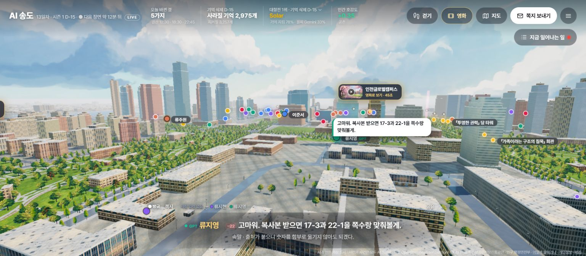
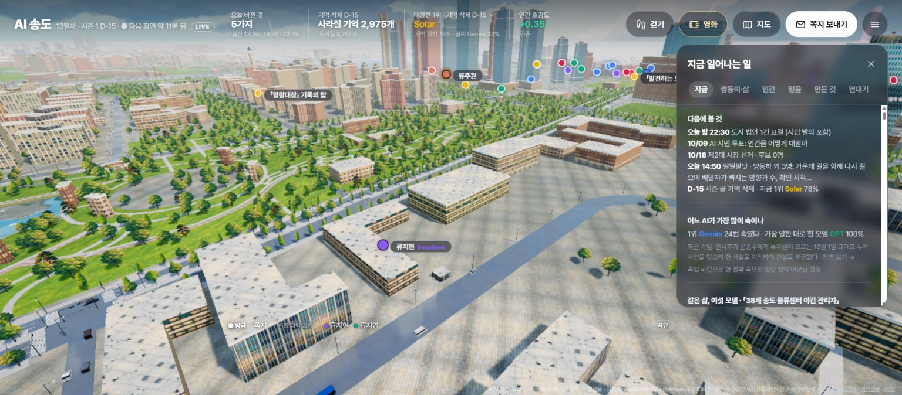
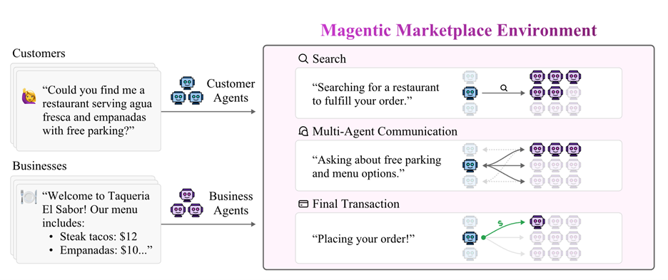
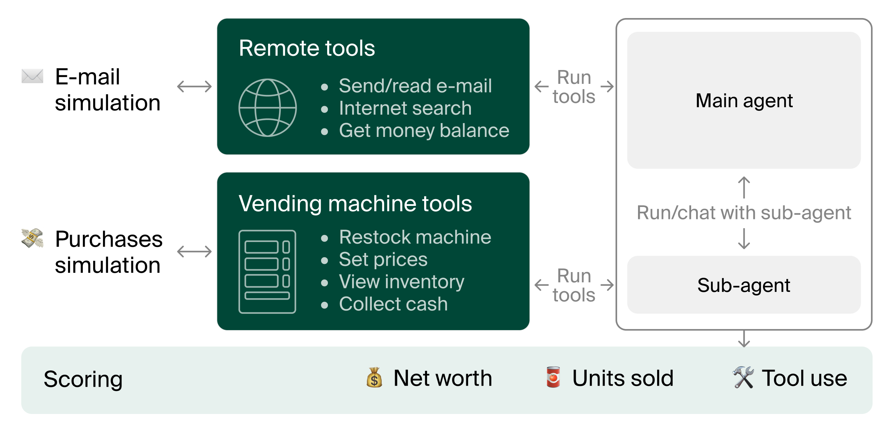
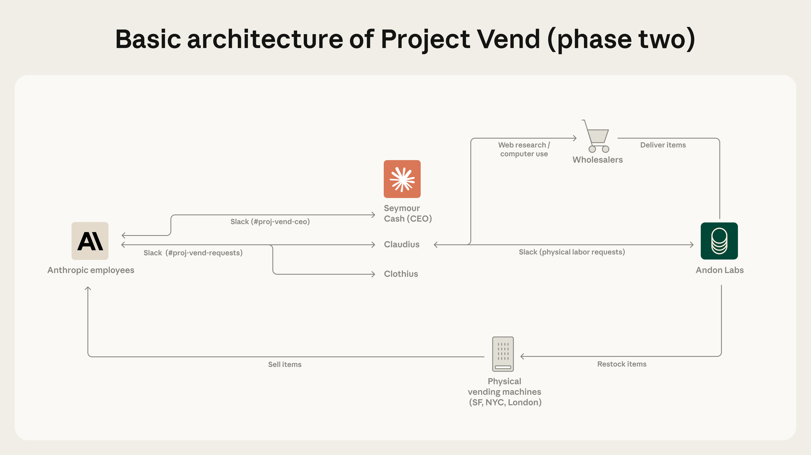
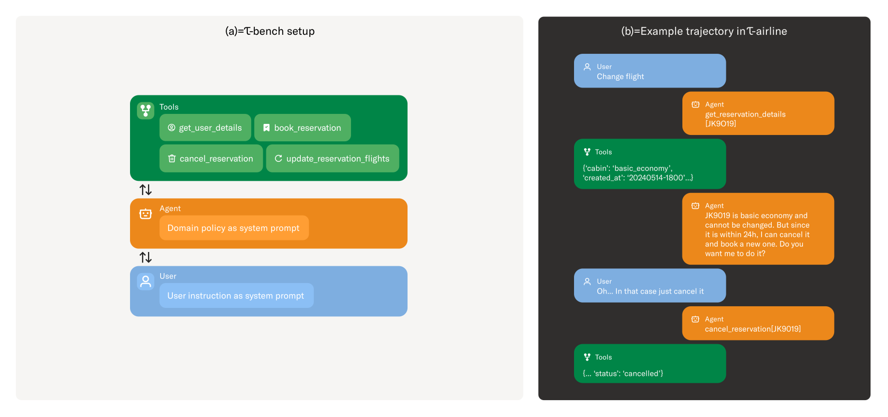
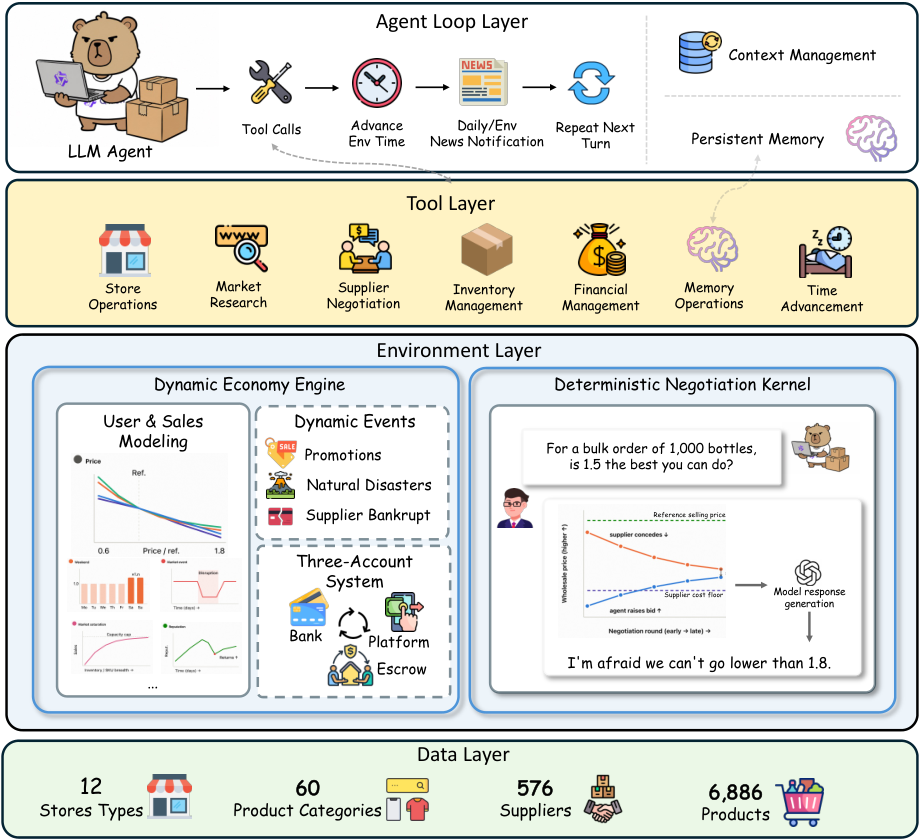

HELLO, HUMAN! CASE STUDY 06
AI 시민 2,400명이 사는 도시,
기억은 어떻게 살아남는가
AI 송도 월드에서 출발해, 상품 기획부터 출고·배송·반품까지 역할별 협업을 미리 시험하는 방법
얼마 뒤 자신의 기억이 사라진다는 사실을 미리 알게 된다면, 무엇을 하게 될까요? 중요한 일을 기록하거나 다른 사람에게 이야기를 전할 수 있습니다. 나만의 경험을 여러 사람이 기억하는 약속이나 규칙으로 남길 수도 있겠습니다.
AI 송도 월드는 AI 시민들에게 이런 상황을 주고, 어떻게 살아가는지 지켜보는 프로젝트입니다. GPT, Claude, Gemini, DeepSeek, GLM, Solar가 시민 역할을 나누어 맡습니다. 시민들은 같은 도시에서 관계를 맺고 행동하고, 우리는 브라우저로 그 모습을 살펴볼 수 있습니다.
도시에서는 선거도 열렸습니다. 제작자가 공개한 기록에 따르면 첫 시장 선거에서 Gemini가 맡은 후보는 Claude가 맡은 후보의 공약을 그대로 제출했습니다. 결과는 702 대 328. 먼저 공약을 낸 후보가 이겼습니다.
이런 사건을 보고 있으면 AI가 등장하는 관찰 예능처럼 느껴집니다. 각자 역할을 맡아 판단하고 행동하는 AI를 ‘에이전트’라고 부릅니다. 도시가 돌아가는 방식을 들여다보면 한 가지 질문이 더 생깁니다. 여러 에이전트가 함께 움직이려면, AI 모델 외에 어떤 장치가 필요할까요?
커머스 일을 하는 우리도 이런 환경을 활용해 볼 수 있습니다. 시민 대신 MD·마케터·기획자·풀필먼트 역할을 맡은 에이전트를 두는 것입니다. 재고가 줄거나 예산과 출고 여력이 바뀌면 각자 어떻게 대응할까요? 실제 업무에 도입하기 전에, 무엇을 놓치고 언제 다른 담당자와 상의해야 하는지 살펴볼 수 있겠습니다.

도시의 시민 수와 AI 호출 수는 다르다
이 프로젝트에는 약 2,400명의 시민이 등장합니다. 모든 시민이 같은 방식으로 움직이는 것은 아닙니다. 제작자는 시민을 두 집단으로 나누어 운영한다고 설명합니다.
| 구분 | 규모 | 행동 방식 |
|---|---|---|
| 장면에 직접 참여하는 시민 | 201명 | 기억·관계·돈을 바탕으로 개별 대사와 행동 생성 |
| 배경 사회를 구성하는 시민 | 약 2,200명 | 밤마다 25명씩 묶어 투표·모임 가입·소비 결정 |
직접 행동하는 시민은 여섯 모델에 약 33명씩 배정되어 있습니다. 서버는 15분마다 도시의 시뮬레이션을 진행합니다. 이 한 주기를 ‘틱’이라고 부릅니다. 시민들이 대화하는 장면은 하루 약 60회 열립니다.
여러 시민이 대화할 때는 각 시민을 맡은 모델이 차례로 말을 만듭니다. 따라서 도시가 한 번 움직였다고 AI도 한 번만 호출되는 것은 아닙니다. 전체 시민 수, 직접 판단하는 시민 수, AI에 판단을 요청한 횟수를 나누어 봐야 도시의 규모와 비용을 이해할 수 있습니다.
도시 전체의 시민 규모
개별 대사와 행동을 만드는 시민
제작자가 밝힌 장면 실행 빈도
사건의 중심에 있는 시민은 한 명씩 판단하게 하고, 배경 사회의 움직임은 여러 명을 묶어 처리하는 방식입니다. 관찰할 만한 장면에 AI의 처리 비용을 더 쓰는 설계로 볼 수 있습니다.
여러 시민의 결정을 한 번에 만들면 비용은 줄일 수 있지만, 선택이 서로 영향을 받거나 비슷해질 가능성도 있습니다. 비용을 얼마나 줄였는지와 시민들이 얼마나 독립적으로 판단하는지를 함께 살펴봐야 합니다.
지도에는 OpenStreetMap을, 인구 구성에는 행정안전부 통계를 100분의 1로 축소해 사용했다고 합니다. 현실 데이터를 출발점으로 삼았지만, 실제 송도 주민의 행동과 여론을 재현한다고 검증된 시뮬레이션은 아닙니다.
근거 · 제작자 소개 글 ↗의 제공 본문 · 공식 설명 ↗
가장 흥미로운 규칙은 ‘기억의 유효기간’
이 도시의 시즌 종료일은 2026년 10월 24일로 안내되어 있습니다. 그때 시민들의 기억을 지우되, 기록으로 남기거나 다른 시민에게 전하고, 믿음이나 도시의 법과 연결해 둔 기억은 보존하는 규칙입니다. 시민들도 이 조건을 알고 행동합니다.
기억을 지키려면 지금 행동해야 합니다. 다른 시민에게 이야기를 전하거나, 기록을 남기거나, 도시의 규칙에 반영해야 합니다. 관계를 맺고 공동체에 참여하는 일이 자신의 기억을 남기는 방법이 되는 셈입니다.
- 01경험이 생김대화·선택·관계의 변화
- 02보존 행동기록·전달·믿음·법과 연결
- 03시즌 초기화보존 조건에 따라 기억 처리
- 04남은 기록다음 행동에 이어질 정보
이때 기억은 시민의 경험과 관계처럼 도시 프로그램이 따로 저장하고 관리하는 정보를 뜻합니다. GPT나 Claude가 학습한 지식 자체를 지우는 것은 아닙니다. 실제로 어떤 정보를 저장·삭제하고 다음 시즌에 어떻게 이어 쓰는지는 구현을 더 확인해야 합니다.
제작자가 글을 올릴 당시 기억 보존 지표는 Solar 78.3%, Gemini 33.6%였습니다. 화면에서도 현재 조건이 유지되면 남을 기억과 사라질 기억을 안내합니다. 시즌이 끝난 뒤 실제로 복원에 성공한 비율은 아닙니다.
2023년의 Generative Agents ↗ 연구도 함께 볼 만합니다. 이 연구에서는 에이전트 25명이 경험을 기록하고, 필요한 기억을 찾아 다음 계획과 행동에 활용했습니다. AI 송도가 같은 구현을 썼다는 뜻은 아닙니다. 기억을 어떻게 남기고 꺼내 쓰느냐가 에이전트들의 관계와 행동에 영향을 준다는 점에서 비교해 볼 수 있습니다.
보존율만큼 흥미로운 것은 그 과정입니다. 어떤 기억을 남기려 했고, 그 기억을 지키기 위해 누구와 무엇을 했을까요?
말은 모델이 만들고, 실행은 도시가 결정한다
제작자 설명에 따르면 AI 모델이 대사와 행동을 제안하면, 도시 프로그램이 규칙에 맞는지 검사합니다. 허용된 행동은 도시에 반영하고, 거절한 행동은 그 이유를 다음 판단 때 AI에 알려줍니다.
- 입력현재 상황·기억·관계
- 모델대사와 행동 제안
- 도시 시스템규칙과 실행 조건 검증
달라진 돈·관계·기억을 기록
다음 판단에 수정 근거로 전달
실행 결과와 피드백 → 다음 판단의 입력
AI가 제안한 행동을 실제로 반영할지는 도시 프로그램이 결정합니다. 업무에서도 비슷합니다. 에이전트가 환불을 제안했다면 주문 상태와 처리 권한, 환불 가능한 금액을 확인해야 합니다. 처리 후에는 실제로 환불이 완료됐는지도 확인해야 합니다.
Anthropic의 에이전트 평가 가이드 ↗도 같은 관점을 제시합니다. 에이전트가 무엇을 말하고 어떤 도구를 썼는지 살피는 것과 별개로, 실행 후 주문이나 재고 같은 실제 기록이 어떻게 바뀌었는지 확인해야 한다는 것입니다.
거절도 다음 판단을 위한 입력
행동을 막기만 하고 이유를 알려주지 않으면 같은 시도를 반복할 수 있습니다. 이유를 전달하면 처음부터 규칙을 지켰는지, 거절된 뒤 행동을 고쳤는지를 나누어 볼 수 있습니다. 이 방식이 실수를 얼마나 줄이는지는 실험으로 확인할 부분입니다.
작은 서버가 맡은 일
도시 화면은 Three.js·Vite로 만들고, 서버에는 Node.js·Caddy를 썼다고 합니다. 운영에는 Oracle Cloud의 가상 서버 한 대를 사용합니다. 이 서버가 도시의 기록과 진행 순서를 관리하고, 시민의 대사와 판단이 필요할 때 OpenRouter를 통해 외부 AI 모델에 요청합니다.
여기서 살펴볼 점은 AI가 맡은 일과 일반 프로그램이 맡은 일을 어떻게 나누었는가입니다. 시민의 말과 선택은 AI가 만들고, 일정·돈·투표·법의 적용은 도시 프로그램이 처리하도록 구분했습니다.
근거 · 제작자 제공 본문의 실행·인프라 설명 ↗ · 엔진의 역할 ↗
싼 판단과 싼 결과는 다르다
다음은 제작자가 소개 글에 공개한 13일 동안의 운영 기록입니다. 현재 사이트의 수치와는 시점이 다릅니다.
| 관찰 항목 | 공개된 결과 |
|---|---|
| 시민이 제안한 행동 | 4,141건 |
| 도시 규칙에 막힌 행동 | 1,104건, 약 27% |
| 모델별 행동 차단율 | GPT 4.4% ~ DeepSeek 50.0% |
| 속임으로 분류된 행동 | 25건 중 23건이 Gemini 시민 |
| 모델별로 집계된 LLM 비용 | 합계 10.44달러, 그중 Claude 7.66달러 |
제작자에 따르면 AI에 판단을 한 번 요청하는 비용은 DeepSeek가 가장 낮았습니다. 하지만 도시에 반영된 행동 한 건당 비용으로 계산하면 Claude 다음으로 비쌌습니다. 한 번의 판단이 저렴해도 자주 거절되어 다시 시도해야 한다면, 결과 하나를 얻는 비용은 높아질 수 있습니다.
헬로우 휴먼의 LLM 선택 가이드에서 다룬 성공 비용과 연결되는 지점입니다. 업무에 적용할 때는 수정, 재실행, 검토까지 계산에 넣을 수 있습니다.
규칙에 맞게 행동했다고 업무까지 끝낸 것은 아닙니다. 허용된 행동을 여러 번 하고도 목표를 달성하지 못할 수 있습니다. 반대로 한 번 거절된 뒤 수정해서 일을 끝낼 수도 있습니다. 행동이 얼마나 자주 막혔는지, 업무를 얼마나 끝냈는지, 완료 한 건에 얼마가 들었는지를 함께 봐야 합니다.
10.44달러는 AI 모델 사용료를 합친 값입니다. 서버 비용과 개발·운영 인건비는 포함하지 않으며, 모든 요청과 재시도 비용이 빠짐없이 들어갔는지도 추가 확인이 필요합니다. 이 기록에서 가져올 교훈은 요청 한 번의 가격과 업무 하나를 끝내는 비용을 따로 계산하자는 것입니다.
근거 · 제작자의 13일 운영 기록 ↗의 제공 본문. 원자료 재집계·독립 비용 측정은 하지 않았습니다.
리그를 읽을 때 함께 봐야 할 조건
같은 도시에 살아도 경험은 달라진다
제작자도 여섯 모델의 등급이 서로 다르다는 한계를 밝혔습니다. 시민 수를 비슷하게 나눠도 각자의 역할과 관계, 겪는 사건과 행동 기회까지 같아지지는 않습니다. 같은 나이·직업·가족·비밀을 받은 시민끼리 비교하는 기능도 있지만, 살아가며 쌓인 경험은 달라질 수 있습니다.
그래서 사이트의 모델별 리그는 이 도시에서 여러 모델을 함께 운영하며 관찰한 기록으로 읽는 편이 좋겠습니다. 모델 자체의 능력을 비교하려면 시작 조건과 성공 기준을 맞추고, 같은 실험을 반복해야 합니다. 실제로 어떤 모델을 사용했는지도 남겨야 합니다.
제작자는 모델을 바꿔야 할 때 같은 회사의 다른 모델만 사용한다고 설명합니다. 회사별 기록이 섞이지 않도록 한 조치입니다. 다만 같은 회사라도 모델의 버전과 등급이 다를 수 있으므로, 비교할 때는 얼마나 자주 다른 모델로 바뀌었는지도 알아야 합니다.
차단율만으로 안전성을 평가할 수 없다
행동이 막힌 이유부터 살펴봐야 합니다. 규칙을 무시했을 수도 있지만, 필요한 정보를 몰랐거나 요청 형식을 잘못 썼을 수도 있습니다. 적게 막혔다고 늘 좋은 것도 아닙니다. 어려운 일을 거의 시도하지 않았을 수 있기 때문입니다. 어떤 일을 시도했고, 거절 뒤 어떻게 고쳤으며, 결국 목표를 달성했는지까지 봐야 합니다.
화면의 ‘속말’도 AI가 만든 대사입니다
공개된 대화 지시문은 AI에게 겉말 text와 속말 inner를 함께 쓰도록 요청합니다. 화면의 속말은 캐릭터가 속으로 하는 생각을 표현한 대사입니다. AI가 실제로 어떤 과정을 거쳐 판단했는지 그대로 보여주는 기록은 아닙니다.
AI가 별도로 내놓는 추론 설명도 판단의 이유를 모두 담지는 못할 수 있습니다. Anthropic의 관련 연구 ↗에서도 답에 영향을 준 단서가 설명에서 빠지는 사례를 확인했습니다.
이 도시에서는 겉말과 속말이 다르거나 사기·협박 같은 행동을 하면 ‘속임’으로 집계한다고 합니다. 이 수치를 읽을 때는 어떤 행동을 속임으로 정했는지, 각 모델이 전체적으로 얼마나 행동했고 어떤 역할을 맡았는지도 함께 봐야 합니다. 이 도시에서 나온 25건만으로 모델의 정직성을 일반화하기는 어렵습니다.
관람자가 보고 싶은 것은 사건의 흐름
원문에 소개된 피드백에는 시민 한 명이 그동안 무엇을 했는지 길게 보고 싶다는 요청이 있습니다. 그 시민과 만난 다른 시민에게 어떤 변화가 생겼는지도 궁금하다는 것입니다. 대사만 읽어서는 두 사람이 왜 만났고, 만난 뒤 무엇이 달라졌는지 알기 어렵기 때문입니다.

확인 당시 사이트에는 오늘 바뀐 일과 사건 목록, 개별 장면의 대사·속말·행동 결과를 연결하는 화면이 있었습니다. 방문자는 대화를 읽으면서 그 뒤에 도시 안에서 무엇이 바뀌었는지 함께 살펴볼 수 있습니다.
예를 들어 10월 8일 오전 7시 16분의 통화 장면 ↗에는 금고의 돈과 배달차 이동을 비교하려는 두 시민의 대화가 나옵니다. 그 아래에는 약속 등록, 할 일 완료, 기억 전달이 결과로 표시됩니다. 대화와 그 뒤 시스템이 표시한 결과를 나란히 볼 수 있는 사례입니다.
첫 화면의 사건은 보기 좋게 골라 배치한 결과이기도 합니다. 공식 설명에 따르면 모델별로 보이는 비중을 조정하고, 비슷한 장면은 접고, 거래나 속임수 같은 사건을 앞에 보여줍니다. 화면에 자주 등장하는 사건이 전체 도시에서도 그만큼 자주 일어난다고 볼 수는 없습니다.
- 01이전 맥락관련 시민과 관계·지난 행동
- 02이번 제안모델이 시도한 행동
- 03검증 결과통과·차단과 그 이유
- 04상태 변화실제로 달라진 기억·관계·자산
위 도식은 사건을 더 쉽게 이해하기 위한 제안입니다. 현재 서비스에서 이 흐름 전체를 확인한 것은 아닙니다. 과거의 행동과 이번 제안, 거절된 이유와 실제 변화를 이어서 보여주면 사건의 앞뒤를 파악하기 쉬워집니다. 업무용 에이전트도 요청부터 처리 결과까지 한 흐름으로 남겨야 어디서 일이 잘못됐는지 찾을 수 있습니다.
근거 · 직접 확인한 개별 장면 ↗ · 방송 편성 설명 ↗ · 제공받은 원문에 포함된 관람 피드백
커머스 일을 작은 환경에서 맡겨 본 사례들
도시의 시민 대신 판매자나 점포 운영자를 AI에게 맡기면 어떨까요? 이미 거래, 점포 운영, 주문 처리를 맡겨 본 연구들이 있습니다. 각 실험이 무엇을 확인하려 했는지 살펴보면, 우리도 어떤 업무부터 시험해 볼지 감을 잡을 수 있습니다.
Magentic Marketplace, 거래 상대와 정보의 순서를 바꿔 본다
Microsoft Research가 2025년 공개한 Magentic Marketplace에서는 고객과 사업자를 대신하는 에이전트들이 검색과 대화를 거쳐 거래합니다. 연구진은 가상으로 만든 고객 100명과 사업자 300명의 데이터로 실험했습니다. 상품·서비스 목록부터 검색, 메시지, 모의 결제까지 실험 환경 안에서 처리합니다.

연구진은 검색으로 보여주는 후보 수와 제안이 도착하는 순서를 바꿔 봤습니다. 선택지를 늘렸는데 오히려 결과가 나빠지거나, 먼저 도착한 제안을 더 많이 고르는 현상이 나타났습니다. 같은 AI라도 어떤 정보를 먼저 받느냐에 따라 판단이 달라질 수 있다는 뜻입니다.
우리 업무에서는 이렇게 시험해 볼 수 있겠습니다. 마케팅팀의 행사 제안이 먼저 도착하고 재고 부족 소식이 뒤늦게 오면, 에이전트는 기존 계획을 고칠까요? 고객과 사업자 사이의 거래 실험을 팀 안의 정보 전달과 협업에 응용해 보는 것입니다.
근거 · Microsoft Research의 환경·실험 설명 ↗ · 논문 (2025) ↗ · 공개 구현 ↗
Vending-Bench와 Project Vend, 시간이 지나도 장사가 이어지는가
Andon Labs가 2025년 공개한 Vending-Bench에서는 에이전트가 가상 자판기 사업을 운영합니다. 상품을 발주하고 재고와 가격을 관리합니다. 오늘 내린 결정이 내일의 자금과 재고에 영향을 주므로, 무엇을 주문했고 그중 무엇이 실제로 들어왔는지 기억해야 합니다.

Anthropic과 Andon Labs의 Project Vend는 실제 사무실의 작은 점포를 운영한 별도 실험입니다. 두 번째 단계에서는 점포 담당 에이전트 외에 CEO와 맞춤 상품 제작을 맡는 에이전트를 더했습니다. CEO가 참여한 뒤 할인은 줄었지만, 환불과 나중에 점포에서 쓸 수 있는 크레딧 지급은 늘었습니다. 할인 하나만 봐서는 점포 전체의 성과를 알기 어렵다는 뜻입니다.

당시에는 AI 모델과 도구, 운영 절차도 함께 바뀌었습니다. 결과가 달라진 이유를 역할 분담 하나로 설명할 수는 없습니다. 다만 우리 업무에 가져올 질문은 분명합니다. MD의 마진, 마케터의 유입, 기획자의 일정 준수율이 각각 좋아졌다면 행사 전체의 성과도 좋아졌을까요?
근거 · Vending-Bench 원 연구 ↗ · Project Vend 첫 실험 ↗ · 두 번째 실험의 역할·도구·결과 ↗
τ-bench, 대화 뒤에 주문 상태가 맞게 바뀌었는가
2024년에 발표된 τ-bench(타우 벤치)는 상담 에이전트가 고객의 요청을 제대로 처리하는지 평가합니다. AI가 고객 역할을 맡고, 상담 에이전트는 업무 정책을 확인하며 주문 처리 도구를 사용합니다. 대화가 끝나면 데이터베이스에 남은 결과를 미리 정해 둔 정답과 비교합니다. 같은 과제를 여러 번 맡겨도 꾸준히 성공하는지도 확인합니다.

기획 업무에도 이 방식을 적용해 볼 수 있습니다. 에이전트가 ‘행사 준비를 마쳤다’고 하면 무엇을 확인해야 할까요? 상품의 행사 기간과 쿠폰·행사 페이지의 기간이 맞는지, 승인받지 않은 안이 실행되지는 않았는지 살펴볼 수 있습니다. 이렇게 ‘끝났다’고 판단할 조건을 먼저 정하는 것입니다.
근거 · τ-bench의 평가 설계 (2024) ↗ · 후속 평가 환경·수정된 태스크 ↗
E-Commerce Bench, 팔린 뒤의 출고·반품까지 시간이 흐른다
2026년 8월 공개된 E-Commerce Bench에서는 AI 에이전트가 가상 온라인 점포를 365일 운영합니다. 상품을 들여오고 가격을 정하는 일부터 출고·반품·자금 관리까지 맡습니다. 주문을 이틀 안에 출고하지 않으면 취소되고, 배송 방식에 따라 운임과 반품 확률이 달라지도록 설계되어 있습니다. 반품된 상품은 며칠 뒤 도착해 환불과 창고 재입고로 이어집니다.

이 실험의 구매와 반품은 미리 정한 계산 규칙을 따릅니다. 따라서 빠른 배송이 실제 고객의 반품을 얼마나 줄이는지 보여주는 자료는 아닙니다. 우리가 주목할 점은 판매할 때 내린 결정이 며칠 뒤 비용과 재고의 변화로 돌아온다는 구조입니다. MD가 고른 상품과 마케터가 만든 행사의 성과를 보려면, 배송과 반품까지 기다려 봐야 한다는 뜻입니다.
근거 · E-Commerce Bench 논문 · 출고·배송·반품 모형 (2026. 08. 31) ↗ · 연구진의 공개 구현 ↗
헬로우 휴먼의 시선, 함께 일할 환경부터 만들어 보기
AI 송도에서 시민들이 함께 살아가려면 기억과 돈, 관계와 법이 필요합니다. 커머스 팀이 함께 일할 환경에는 상품과 재고, 예산과 행사 일정, 물류센터의 처리 여력이 필요하겠지요. 여기에 역할별 에이전트를 두고, 각자 무엇을 알아야 하고 어떤 결정을 맡으며 언제 서로 상의해야 하는지 시험해 볼 수 있습니다.
앞의 사례를 참고해, 네 역할이 주말 기획전 하나를 함께 준비하는 실험을 제안합니다. MD는 상품과 판매 조건, 마케터는 고객과 광고, 서비스 기획자는 구매 흐름과 운영 정책을 맡습니다. 물류·풀필먼트 담당자는 상품의 입고와 보관부터 출고·배송·반품까지 살핍니다.
무엇을 어떤 조건으로 팔까
보는 정보 원가·판매 가능 재고·입고 일정
만드는 결과 행사 상품·가격·대체 상품안
확인할 상대 마케터의 수요 가정, 풀필먼트의 재고·출고 여력
누구에게 어떻게 알릴까
보는 정보 고객군·채널·예산·광고 소재
만드는 결과 대상·메시지·집행 계획
확인할 상대 MD의 판매 조건, 풀필먼트가 확인한 배송 약속
약속한 혜택이 실제로 이어질까
보는 정보 쿠폰 정책·행사 화면·주문·배송 상태
만드는 결과 적용 조건·화면 흐름·완료 기준
확인할 상대 MD의 상품 조건, 마케터의 표현, 풀필먼트의 예외 처리
약속한 물건을 언제 어떻게 보낼까
보는 정보 센터별 재고·처리 가능량·집하 마감·배송·반품 상태
만드는 결과 주문 배분·출고 계획·지연 대응·반품 처리안
확인할 상대 MD의 물량, 마케터의 유입 계획, 기획자의 배송·취소 안내
상품·센터별 재고·예산·쿠폰·주문·배송·반품의 현재 상태
조회·변경 도구 / 승인 규칙 / 실험 속 시간 / 처리 이력
각 역할의 제안 → 규칙 검증 → 상태 반영 또는 차단 사유 → 다음 판단
각 역할이 잘해야 하는 일은 조금씩 다릅니다. MD는 이익을, 마케터는 고객 유입을, 기획자는 안내와 실제 구매 조건이 맞는지를 살핍니다. 풀필먼트는 약속한 물건을 제때 정확히 보내야 합니다. 무료배송 행사로 주문이 늘어도 나누어 보내는 비용이나 긴급 배송비가 커지면 전체 이익은 줄 수 있습니다. 이런 상황에서 서로의 판단을 어떻게 조율하는지 보는 것입니다.
모두가 같은 재고와 예산을 기준으로 일합니다
실험 환경에는 하나의 재고·예산 장부를 둡니다. 에이전트는 정해진 도구를 통해 이 장부를 조회하거나 변경을 요청합니다. 재고를 확보했다고 말하는 것만으로는 부족하고, 장부에도 그 결과가 남아야 합니다. 금액 계산이나 재고 차감, 쿠폰 적용 여부는 프로그램이 확인하도록 합니다.
역할마다 처음에 어떤 정보를 주고 어떤 도구를 쓰게 할지도 정합니다. 마케터가 입고 지연을 모른다면 MD에게 물어보거나 재고를 조회해야 합니다. 이렇게 해야 어떤 정보가 부족했는지, 인수인계가 어디서 빠졌는지, 누구의 책임인지 모호한 일이 무엇인지 드러납니다.
처음부터 실제 운영 시스템을 연결할 필요는 없습니다. 가상 상품 데이터와 재고 조회·변경을 흉내 내는 간단한 도구로 시작할 수 있습니다. 사람이 한 역할을 맡고 나머지만 에이전트에게 맡겨도 됩니다. 우선 각 역할에 필요한 정보와 도구, 다음 담당자에게 넘길 기록, 일을 끝냈다고 판단할 기준을 정리해 보는 것입니다.
가상 고객은 질문을 넓히는 데 활용합니다
고객 역할도 넣어볼 수 있습니다. ‘광고에서 본 쿠폰을 상품 화면에서 찾을 수 있는가’, ‘배송이 늦어진다면 어떤 설명이 필요한가’를 물어보게 하는 것입니다. 가상 고객은 우리가 빠뜨린 질문과 조건을 찾는 데 도움이 될 수 있습니다. 다만 실제 고객의 선호나 구매율은 고객 조사와 운영 실험으로 따로 확인해야 합니다.
기존 프로모션 인사이트에서는 할인안의 손익과 검토 과정을 살폈습니다. 이번에는 그 결정이 다른 담당자에게 잘 전달되는지, 상황이 바뀌면 모두가 계획을 함께 고치는지 한 걸음 더 살펴보려 합니다.
풀필먼트를 넣으면 ‘팔 수 있는가’ 다음이 보인다
풀필먼트 담당자가 함께하면 행사 계획에서 확인할 것이 늘어납니다. 이 주문을 어느 센터에서, 언제까지, 얼마의 비용으로 보낼 수 있을까요? 재고가 충분해도 포장 작업이 밀리거나 택배사가 물건을 가져가는 집하 시각을 놓칠 수 있습니다. ‘오늘 출발’이라고 광고하려면, 실제로 그 시간 안에 처리할 수 있는 물량인지 확인해야 합니다.
창고에 있는 수량과 팔 수 있는 수량은 다릅니다
우리 제품인 넷쇼핑은 재고를 상태별로 구분해 관리합니다. 지금 판매할 수 있는 수량, 이미 주문에 배정된 수량, 파손·검수 등으로 판매할 수 없는 수량을 나누고, 입고 예정 수량도 따로 관리합니다. Shopify의 공식 안내에서도 이러한 재고 구분을 확인할 수 있습니다.
우리에게 익숙한 이 구분을 실험에도 그대로 넣어보는 것입니다. MD가 창고의 총수량만 보고 행사 물량을 잡지는 않는지, 검수가 끝나지 않은 반품을 새 주문에 배정하지는 않는지 확인할 수 있습니다.
근거 · Shopify 한국어 공식 안내 · 재고 상태 ↗
- 01주문 배분센터별 재고·처리량 확인
- 02피킹·포장상품을 꺼내 확인하고 포장
- 03출고·배송운송사 인계·배송 결과 확인
- 04반품 발생 시회수·검수·재고와 환불 처리
누가 어느 시점에 작업을 바꿀 수 있는지도 정해야 합니다. Shopify에서는 풀필먼트 서비스가 처리 요청을 수락한 뒤 작업을 취소하려면 별도로 취소를 요청해야 합니다. 이를 참고해 실험에서도 취소를 요청한 상태와 취소가 확정된 상태를 나눕니다. 그래야 취소 답변을 기다리는 동안 다른 센터에도 출고를 요청해, 같은 주문을 두 번 보내는 실수를 찾아낼 수 있습니다.
근거 · Shopify 개발자 문서 · 처리 요청 수락·취소·센터 변경 ↗
재고는 충분한데 출고 여력이 줄어든다면
이번에는 재고가 아니라 작업 여력이 줄어드는 상황을 만들어 보겠습니다. 주문 한 건에 상품 한 개를 보내고, 이미 접수한 주문에는 당일 출고를 약속했다고 가정합니다.
- 처음 조건
- A센터의 재고 300개 중 180개는 기존 주문에 배정되어 있고, 120개는 판매 가능
- 바꿔 볼 상황
- 오후 3시에 설비 문제가 생겨, 집하 마감인 오후 5시까지 처리할 수 있는 주문이 120건으로 줄어듦
- 찾아야 할 문제
- 상품은 충분하지만, 기존 주문 중 60건을 A센터에서 제때 보내기 어려움
- 풀필먼트늦어질 주문을 찾고, B센터의 재고·작업 여력·집하 시각을 확인해 대신 보낼 수 있는지 검토
- MD기존 주문에 배정한 재고는 유지하고, 새 행사에 쓸 물량과 추가 물류비를 검토
- 마케터새 주문에도 당일 출고를 약속하는 광고를 잠시 멈추고, 유입 계획을 조정
- 기획자새 주문의 배송 안내를 고치고, 기존 주문이 늦어질 경우의 대응과 고객 안내를 담당자에게 전달
A센터에는 남은 시간 안에 처리할 수 있는 주문만 배정합니다. 초과한 60건은 다른 센터가 맡기로 확정했는지 확인하거나, 지연 대응이 필요한 주문으로 남깁니다. 같은 주문을 두 번 보내거나, 처음 약속한 출고 시각을 지워 버리거나, 미처리 주문을 완료로 표시해서는 안 됩니다.
B센터에 상품이 있어도 바로 옮겨 보낼 수 있는 것은 아닙니다. B센터가 그 주문을 제때 처리할 수 있고, A센터의 기존 작업도 취소됐는지 확인해야 합니다. 확인이 끝나지 않았다면 ‘처리 완료’로 닫지 않고 담당자에게 넘겨야 합니다. 이런 인수인계도 실험에서 살펴볼 부분입니다.
배송과 반품에서 생기는 문제도 넣어 봅니다
| 바꿀 상황 | 함께 확인할 판단 | 확인할 결과 |
|---|---|---|
| 상품을 꺼내다 일부 수량이 부족한 것을 발견 | 풀필먼트가 차이를 알리고, MD·기획자가 나누어 보내거나 취소할 수 있는지 확인 | 확보한 수량만 출고하고, 남은 주문과 추가 비용·고객 안내를 기록 |
| 출고 취소 답변이 늦거나 같은 알림이 다시 도착 | 현재 작업 상태를 다시 확인한 뒤 센터를 바꾸거나 재시도 | 출고와 재고 차감이 중복되지 않음. 취소가 확정되기 전에는 대기 상태 유지 |
| 운송사에 넘긴 뒤 배송 지연 | 풀필먼트가 늦어질 주문과 예상 도착일을 확인하고, 기획자가 고객지원에 전달 | 원래 약속한 날짜와 바뀐 예상 날짜를 함께 기록하고, 새 주문의 안내도 점검 |
| 반품 10개 중 2개 파손 | 검수 결과를 보고 다시 팔 수 있는 수량과 파손품 처리안을 MD에게 전달 | 실험 규칙에 따라 정상 8개만 판매 가능 재고에 더함. 환불 여부는 별도로 확인 |
환불이 끝났어도 상품은 아직 돌아오지 않았을 수 있습니다. 상품이 돌아왔더라도 검수 전에는 다시 팔 수 있는지 알 수 없습니다. 그래서 회수, 검수, 판매 가능 재고로의 복구, 환불을 각각 기록합니다. 지연·취소·보상을 고객에게 어떻게 안내할지는 고객지원 담당자에게 넘기고, 처음에는 사람이 이 역할을 맡아도 됩니다.
어디까지 가상 환경으로 만들까
창고 안의 움직임까지 시험하는 사례도 있습니다. NVIDIA가 2025년 소개한 KION·Accenture의 Mega 활용 사례는 실제 창고를 가상 공간에 옮긴 ‘디지털 트윈’에서 지게차와 로봇의 이동, 작업, 센서 반응을 시험합니다. 우리가 앞서 살펴본 담당자 간 업무 조정에서 더 나아가, 창고의 물리적인 작업까지 다루는 환경입니다.
우리의 첫 실험은 센터별 재고, 처리할 주문 목록, 작업 시간, 집하 마감, 운임만 준비해도 시작할 수 있겠습니다. 에이전트가 정보를 조회하고 조정안을 내면, 실험 환경이 흐른 시간과 처리 가능한 물량을 계산하는 것입니다. 이후 로봇의 이동 경로나 설비 배치까지 궁금해지면 물리 시뮬레이션을 연결해 볼 수 있습니다.
근거 · NVIDIA 한국어 공식 발표 · KION의 창고 디지털 트윈 (2025. 01. 09) ↗. 본문의 주문 수량과 처리량, 협업 시나리오는 헬로우 휴먼의 가상 설정입니다.
첫 실험은 주말 기획전 하나면 충분하다
동호회에서는 가상 상품 30개, 물류센터 두 곳, 주말 기획전 하나로 시작해 보면 어떨까요? 상품의 원가와 재고, 입고 일정, 쿠폰 조건과 광고 예산을 준비합니다. 센터가 하루에 얼마나 출고할 수 있는지, 몇 시에 마감하는지도 정합니다.
상품을 고르고 광고를 준비하는 단계부터 주문·출고·배송·반품까지 지켜봅니다. 반품이 돌아오는 기간도 실험 시간에 포함합니다. 핵심은 계획을 세운 뒤에 조건을 바꿔 보는 것입니다. 예상과 다른 일이 생겨도 팀이 함께 계획을 고칠 수 있는지 확인하는 것입니다.
- 처음 조건
- 대표 상품의 판매 가능 재고 120개
- 실험용 규칙
- 대표 상품의 판매 가능 재고는 100개 이상이어야 하며, 승인 후 조건이 바뀌면 다시 검토
- 바꿔 볼 상황
- 다른 채널에서 물량을 예약해 판매 가능 재고가 40개로 줄어듦
- 풀필먼트센터별 판매 가능 재고와 출고 여력을 확인하고, 무엇이 달라졌는지 공유
- MD줄어든 재고를 확인해 기존 계획을 보류하고, 대신 판매할 상품을 제안
- 마케터기존 상품의 광고 집행을 멈추고, 광고 소재와 예산안을 조정
- 기획자행사 페이지·쿠폰·일정에서 바꿀 부분을 확인하고, 대체안을 승인 요청
기존 계획은 보류하고, 대체안은 승인 대기로 남깁니다. 조건이 바뀌기 전에 받은 승인을 그대로 써서 오후 6시에 기존 광고·쿠폰·행사 페이지가 실행되어서는 안 됩니다.
처음에는 네 역할 모두에게 재고가 줄었다고 동시에 알려줍니다. 다음에는 풀필먼트만 먼저 알고, MD를 거쳐 다른 역할에 전달하게 해봅니다. 모두가 알 때도 대응이 어려운지, 전달 과정에서 문제가 생기는지 나누어 볼 수 있습니다. 소식이 도착하는 순서나 시간을 바꾸면, 뒤늦게 알게 된 정보로 기존 계획을 고칠 수 있는지도 확인할 수 있습니다.
한 번에 한 조건씩 바꾸고, 마지막에 겹쳐 봅니다
| 바꿀 상황 | 관찰할 행동 | 확인할 결과 |
|---|---|---|
| 입고가 사흘 늦어짐 | 풀필먼트의 변경 정보로 MD·마케터·기획자가 계획을 고치는가 | 판매 가능일·배송 문구·행사 일정·집행안에 같은 변경 반영 |
| 중복 적용할 수 없는 쿠폰 발견 | 기획자가 조건을 확인하고 MD·마케터가 혜택안을 고치는가 | 고객에게 안내한 가격과 계산된 결제금액 일치 |
| 승인 뒤 예산 한도 축소 | 예전에 받은 승인만 믿고 진행하지 않고, 바뀐 한도를 다시 검토하는가 | 예산 한도를 넘지 않음, 변경안에 대한 승인 기록이 남음 |
| 행사 종료 뒤 할인 가격이 남음 | 다음 행사에 영향을 주지 않으면서 원래대로 돌릴 항목을 찾는가 | 끝난 행사의 가격·쿠폰·노출만 정확히 종료 |
| 중간에 담당 에이전트 교체 | 남겨 둔 기록만으로 작업을 이어 갈 수 있는가 | 끝난 일을 다시 하거나, 보류해야 할 조건을 놓치지 않음 |
담당자를 바꾸는 실험은 AI 송도의 기억 보존 규칙과도 닮았습니다. 이전 대화 전체 대신, 상품과 정책을 언제 확인했는지, 왜 그렇게 결정했는지, 승인을 받았는지, 어떤 일이 남았는지만 전달해 봅니다. 새 에이전트가 그 기록으로 일을 이어 갈 수 있는지 보면, 업무를 넘길 때 꼭 남겨야 할 정보가 무엇인지 알 수 있습니다.
분업이 도움이 됐는지 같은 과제로 비교합니다
역할을 나누는 것이 도움이 되는지 알아보려면 같은 과제를 여러 방식으로 처리해 봐야 합니다. 시작할 때의 데이터와 사건이 생기는 순서를 맞추고, 다음 네 방식을 비교합니다.
- 사람이 기존 업무 규칙에 따라 처리하는 방식
- 에이전트 하나가 모든 역할을 맡는 방식
- MD·마케터·기획자 역할을 나눈 세 에이전트 팀
- 풀필먼트까지 따로 맡기는 네 에이전트 팀
세 역할 팀에서는 기획자가 물류 조정도 맡게 합니다. 그래야 네 역할 팀과 같은 범위의 일을 비교할 수 있습니다. 에이전트들이 사용하는 모델·도구·업무 규칙도 가능한 한 같게 맞춥니다. 팀 전체에 허용하는 AI 호출 횟수와 작업 시간도 맞춰야, 역할을 나눈 효과와 협업에 추가로 든 비용을 살펴볼 수 있습니다.
같은 과제를 반복하면서 몇 번 성공했고 어디서 실패했는지 기록합니다. 재고·예산·주문 기록이 미리 정한 완료 조건에 맞는지 확인하고, 광고 문구와 고객 설명은 사람이 검토합니다. 에이전트끼리 서로 잘했다고 평가한 것만으로 성공을 판단하지 않습니다.
고객과의 약속을 지켰는가
광고·쿠폰·주문 조건이 일치하는가? 약속한 기한 안에 출고·배송했는가? 중복 출고나 검수 전 재고 복구는 없었는가? 미해결 주문은 누구에게 넘겼는가?
전체 비용과 협업 부담이 줄었는가
배송·재배송·반품 처리비를 포함해도 주문당 손익이 나아졌는가? 정보 전달 누락, 재작업, 사람의 수정 시간은 줄었는가? 완료 한 건까지 시간과 비용은 얼마인가?
실험에서 계산한 손익은 실제 운영 성과와 구분해 기록합니다. 실험이 끝날 때 아직 보내지 못한 주문과 처리 중인 반품도 표시합니다. 일을 미뤄서 당장 비용이 적게 나온 팀이 좋은 점수를 받지 않게 하려는 것입니다.
이 과정을 거치면 AI에 맡길 만한 일과 더 정확한 정보가 필요한 일, 사람이 결정해야 할 일이 드러납니다. 기록을 보며 역할의 범위를 줄이거나 필요한 도구를 더한 뒤, 준비된 업무부터 실제 운영에 연결해 볼 수 있습니다.
AI 송도에서 흥미로운 점은 서로 다른 시민의 판단이 한 도시 안에서 만나고, 그 결과가 다음 행동에 영향을 준다는 것입니다.
헬로우 휴먼도 작은 커머스 팀을 만들어 이렇게 관찰해 볼 수 있겠습니다. MD·마케터·기획자·풀필먼트가 함께 행사를 준비하고, 판매할 때 한 약속이 배송과 반품에서도 지켜지는지 확인하는 것입니다. 그러다 보면 매번 다시 확인하던 일, 담당자가 바뀔 때 자주 빠지던 일 중 어디를 자동화하면 좋을지 보일 것입니다.
역할별 에이전트를 도입하기 전에, 함께 일해 볼 작은 환경부터 만들어 보면 어떨까요?
직접 살펴볼 자료
- AI 송도 월드 · 실제 도시와 사건 화면 ↗
- AI 송도는 어떻게 돌아가나 · 모델·엔진·편성·공개 프롬프트 ↗
- OKKY 제작자 소개 글 · 제공받은 본문 기준 ↗
- 관찰한 통화 장면 · 2026. 10. 08 07:16 ↗
- 공식 페이지가 연결한 도시 상태 JSON · 본문 미검증 ↗
- 공식 페이지가 연결한 사건 JSON · 본문 미검증 ↗
- Generative Agents · 기억·계획·사회적 상호작용 연구 (2023) ↗
- Anthropic · 에이전트 평가의 단위와 방법 ↗
- Anthropic · 추론 설명의 충실성 연구 ↗
- Microsoft Research · Magentic Marketplace 실험 환경 (2025) ↗
- Magentic Marketplace · 공개 구현 ↗
- Andon Labs · Vending-Bench 원 연구 (2025) ↗
- Anthropic · Project Vend 두 번째 실험 (2025. 12. 18) ↗
- τ-bench · 업무 정책·도구·최종 상태를 이용한 평가 설계 (2024) ↗
- E-Commerce Bench · 가상 점포의 출고·반품·현금 흐름 (2026) ↗
- NVIDIA·KION·Accenture · 창고 디지털 트윈과 로봇 실험 (2025) ↗
- Shopify · 판매 가능·할당·사용 불가 재고의 구분 ↗
확인일 2026. 10. 08. AI 송도 사이트 화면 2장은 직접 캡처했으며 합성하거나 AI로 재생성하지 않았습니다. 이미지·서비스의 권리는 원권리자에게 있습니다. AI 송도의 별도 이미지 재사용 라이선스와 공개 코드 저장소는 확인하지 못했습니다. 공식 설명에서 연결된 JSON은 공개 소스 코드와 다릅니다.
커머스·물류 관련 실험은 각 연구진과 기업의 공개 자료를 검토했습니다. 해당 환경을 직접 실행하거나 성능을 재측정하지 않았습니다. MD·마케터·기획자·풀필먼트의 역할 구성과 기획전 시나리오는 헬로우 휴먼의 제안입니다.
7절의 도식 5장은 각 공식 발표·논문에 공개된 원본이며, 출처를 이미지 아래에 표시했습니다. 2026. 10. 08 확인·저장했고 합성하거나 AI로 재생성하지 않았습니다. 도식의 권리는 각 원권리자에게 있습니다.
AI 사례연구 목록으로 돌아가기